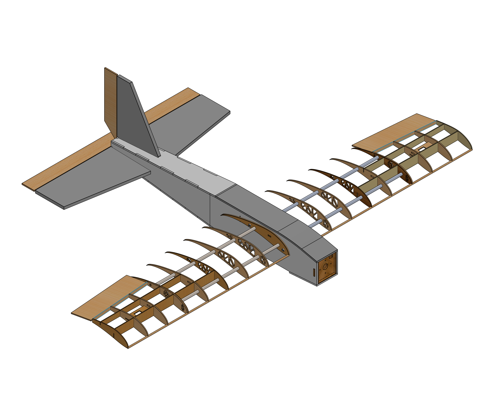
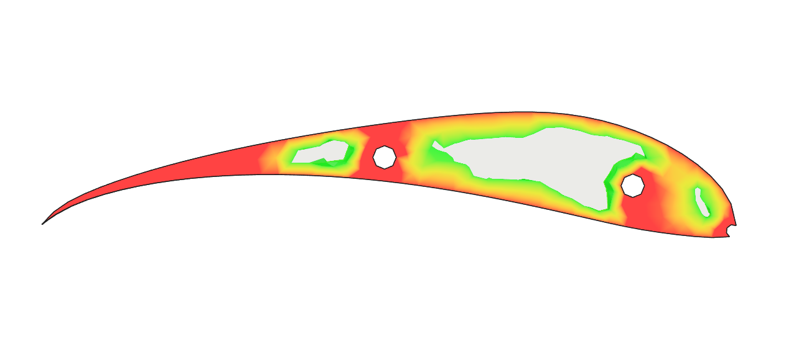

All projects
interEHDFoam — Energy-Coupled EHD Solver
OpenFOAM solver extension adding sensible-enthalpy transport to a multiphase electrohydrodynamic VoF solver for thermally-coupled interfacial dynamics.
VTOL–Fixed-Wing Hybrid UAV
Rotor-aerodynamic CFD of a next-generation hybrid UAV platform; MRF rotating subdomain, full-configuration RANS, transition-regime induced-drag analysis.

SUAS 2025 — Mission-Capable Autonomous UAV
Autonomous fixed-wing platform for the Student UAS competition. Aerodynamic & structural validation, mission planning, ground-station integration. 1st place globally, 81 teams.

PINN Airfoil Self-Noise Prediction
Uniform and cascading physics-informed neural networks on the NASA NACA 0012 dataset. Architecture grid search across 54 configurations; best cascade achieves R²=0.978 — exceeding the Gradient Boosting benchmark at 3.4× lower parameter count.

GPU-Accelerated 2D Navier–Stokes Solver
2D incompressible FVM solver built from scratch in Python/CuPy with custom CUDA kernels. Chorin fractional-step, Rhie-Chow pressure correction, IBM geometry, and swappable Krylov pressure backends — all on a single GPU with ≤1 host–device sync per step.

High-Payload Fixed-Wing UAV
Aerodynamic performance assessment of a payload-optimized fixed-wing UAV. Manuscript in preparation — targeting Journal of Flow Visualization and Image Processing.

Micro-Class Fixed-Wing UAV — Design Evolution
Aerodynamic performance assessment of a micro-class fixed-wing UAV using XFLR5 panel methods and RANS simulations. Peer-reviewed conference paper (FMFP 2025).